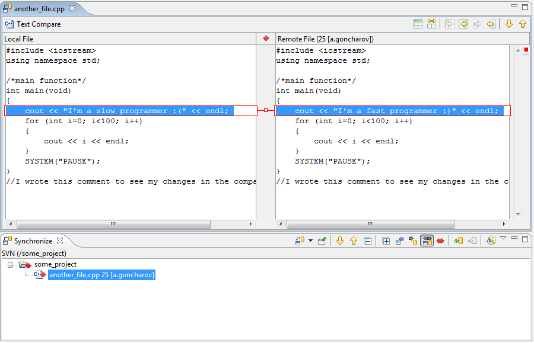

|
|
|
Let's imagine that the user has a shared project "Some project" associated with his workspace copy. There are files "some_file.txt" and "another_file.cpp" containing in the main project folder. And the two notable developers of the big software company both begin a long and serious editing to "another_file.cpp". But one of the appears to be more quick and commits his changes first. So, when the second developer wants to commit his changes he gets a change conflict error and runs a synchronization. Then the curious developer double clicks on a file marked as containing conflict changes and gets the following picture:
So looking at all the changes in a comfortable view the slow developer copies all the appropriate changes to his local file and starts overriding commit.
The work is done!